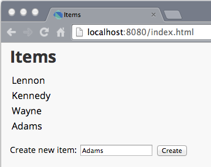
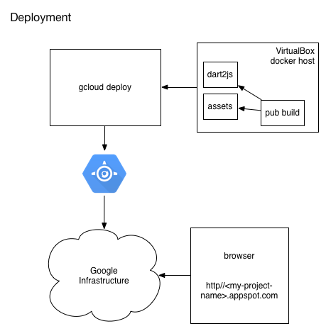

The HelloWorld sample showed you how to create, run, and test the simplest Dart app on an App Engine development server on your local machine. This page shows you how to create, run and test a client/server application. Later you’ll learn how to deploy it to the cloud.
The client is implemented in HTML and Dart and
runs in a browser.
The server is written solely in Dart and runs
in the App Engine Dart runtime.
As with the HelloWorld example,
the server code is in the bin directory.
The client code is in the web directory.
The application allows the user to add items to a list. When the user types in an item, the client sends an HTTP request to the server, which responds. The server stores each item in Cloud Datastore so that when the user revisits the application, the item is still there. The client and server use JSON-formatted data to pass the list items back and forth.
Get the
appengine_samples
from GitHub.
Inside this repo is a clientserver directory.
Within the clientserver directory,
run pub get to pull the necessary libraries
into the client/server project.
This project has dependencies on appengine, gcloud, memcache,
along with a few others.
$ cd clientserver $ pub get
In one terminal window, run pub serve as follows:
$ pub serve web --hostname 192.168.59.3 --port 7777
Any non-trivial HTML client written in Dart requires a transformation/compilation step to run. This step runs all the transformers the project is using. One of these transformers is the Dart to JavaScript compilation.
The pub serve command starts up a server
for your Dart web app.
The pub server is an HTTP server that serves up your client’s assets.
The pub serve command automatically includes a Dart-to-JavaScript transformer
that compiles your Dart code to JavaScript.
With this, you can change some Dart code,
refresh your client, and immediately see the changes.
For App Engine managed VM apps, pub serve needs to listen on
an adapter shared by all docker containers.
In most cases, this will be located at IP 192.168.59.3.
If this address fails, use ifconfig (Mac and Linux) or
ipconfig (Windows) to determine which IP should be used.
The ifconfig output typically lists the adapter as vboxnet1.
The ipconfig output has the heading VirtualBox Host-Only Ethernet Adapter.
For more information, see
boot2docker configuration.
Add the DART_PUB_SERVE environment variable to the app.yaml
file:
env_variables: DART_PUB_SERVE: 'http://192.168.59.3:7777'
Now run the client/server app.
In a different terminal window, run gcloud like this:
$ gcloud preview app run app.yaml
Navigate to http://localhost:8080/.
Enter some items in the list.
You should see something like this:

These are the source files for both the client and the server applications that you got when you downloaded the appengine_samples.
Configures certain aspects of the application, such the app ID, the latest version identifier, and URL mappings to request handlers. This file lives at the top of a Dart project.
Specifies package dependencies for a Dart program. This file is required by all Dart projects and lives at the top of a Dart project.
Implements the Dart HTTP server. Receives and handles HTTP requests from the client program via the App Engine managed VM. This server stores and retrieves entities from the App Engine datastore.
Provides the user interface for the client.
This file includes a script, packages/browser/dart.js, that
handles compatibility with non-Dart browsers.
Implements the Dart HTTP client.
The objects that are stored in the cloud datastore
are implemented by the Item class,
which is defined in the web/model.dart file.
Provides a gcloud model for a Dart type,
Item, so that objects of that
type can be stored in the Cloud Datastore.
The flow of the client/server app is as follows:
The main method spins up an App Engine instance,
passing in the requestHandler callback function.
The key methods in the server are requestHandler, which triages
the requests, and handleItems, which gets items from and sends items
to the datastore.
When an HTTP request comes in, the Dart runtime on App Engine invokes
requestHandler, passing in an HttpRequest instance.
Depending on the HTTP request sent by the client, the handler either serves the main page displaying any items already in the list, adds an item to the list, clears the list, or displays the items in JSON format.
In the client, typing in the text field and clicking the button generates
a POST request with the URI path /items.
The handler adds the item to the list saving it to
Cloud Datastore using the context.services.db.commit method.
The server then sends the response back to the client in
JSON format so the client can update the UI.
When the client starts up, it does a GET request with
the URI path /items. The server looks up the items in the
datastore and passes them in JSON format back to the client.
Using localhost:8080/clean clears the list, removing all items
from the datastore.
Using localhost:8080/items displays the list in JSON format.
As mentioned above, the pub server (run using pub serve) is required for your Dart app.
The pub server is an HTTP server on localhost that serves
up your client’s assets such as images and styles.
In addition to serving static assets, the pub server also produces them
by running transformers.
A transformer converts input assets
(such as Dart files) into output assets (such as JavaScript and HTML).
These output assets aren’t in the file system;
they exist only in the pub server.
The pub server automatically includes a dart2js transformer that compiles
Dart code to JavaScript. With this, you can change some Dart code,
refresh the browser, and immediately see the changes.
The App Engine development server uses pub serve to get assets
for your Dart App Engine app.

Run pub build web manually before deploying, like this:
$ pub build web $ gcloud preview app deploy app.yaml
This generates all required resources into a directory as static files,
which can then be deployed to a server.
Note that the deploy command can take awhile.
If you are interested in how the code works, check out The Client Code Explained and The Server Code Explained.
Or, go straight to Deploy a Dart Application on App Engine.